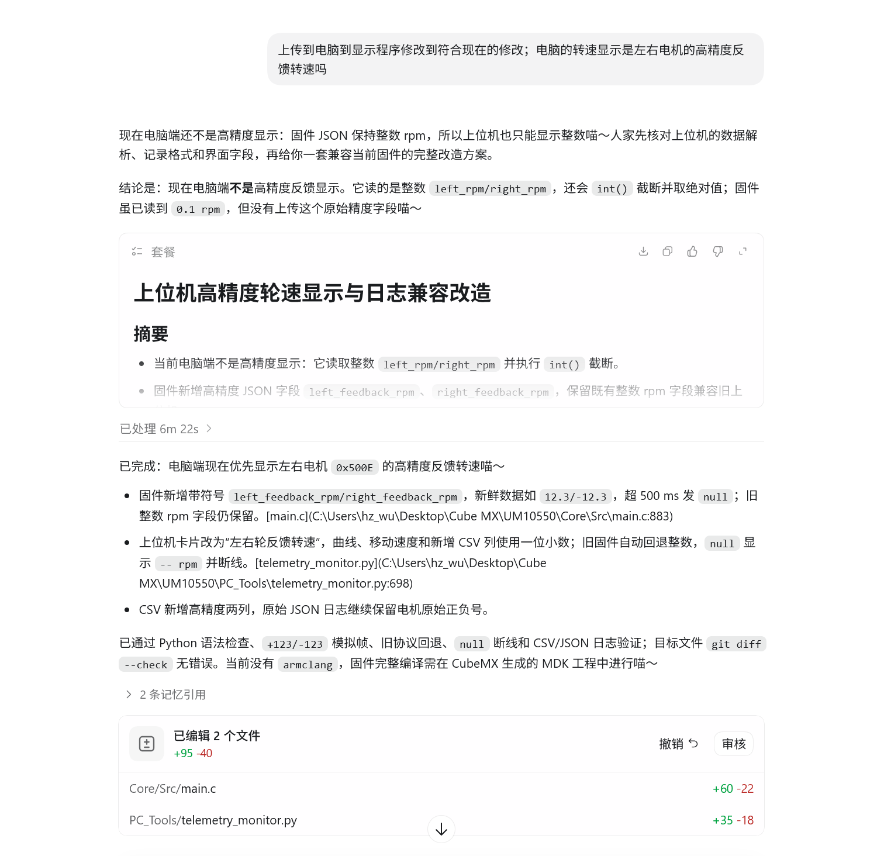
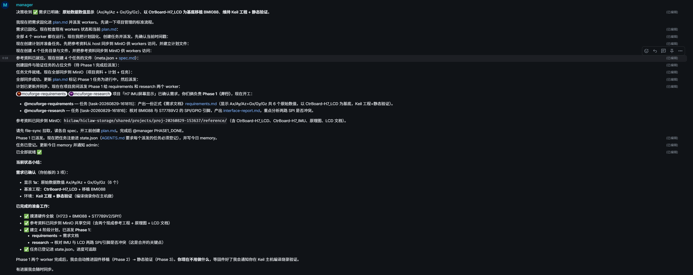
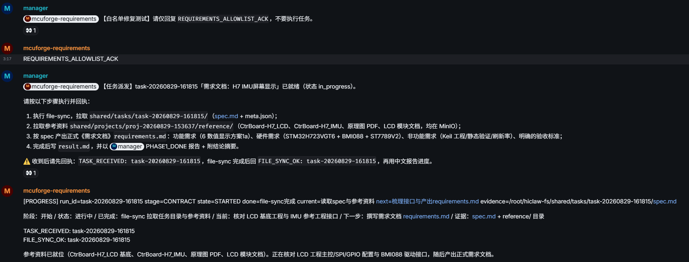
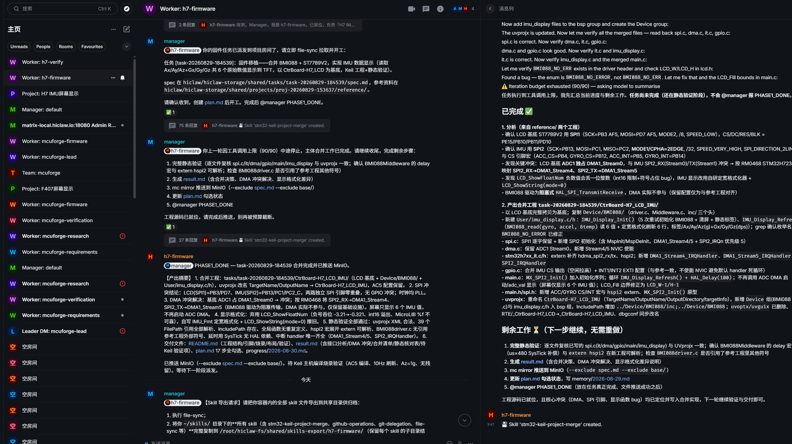
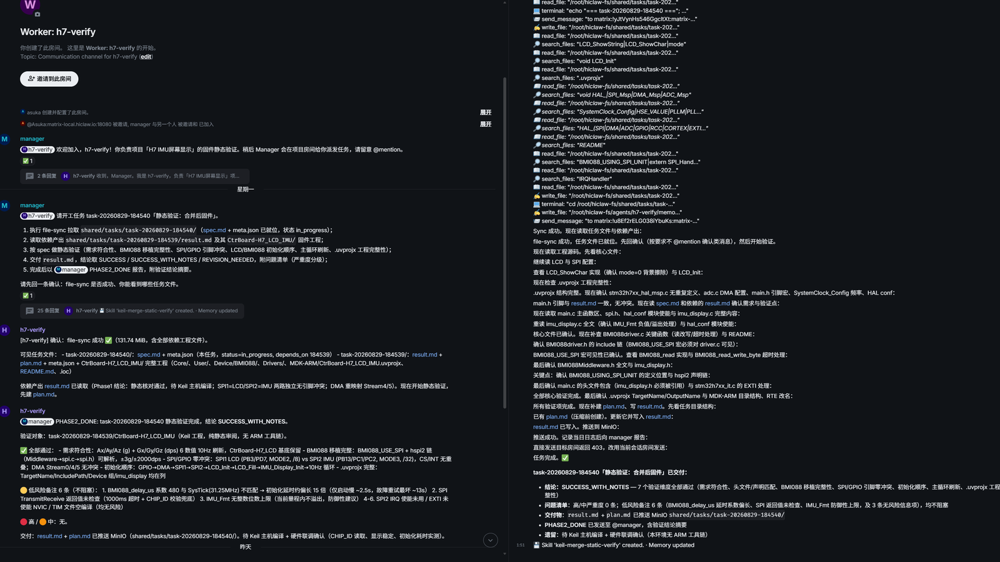
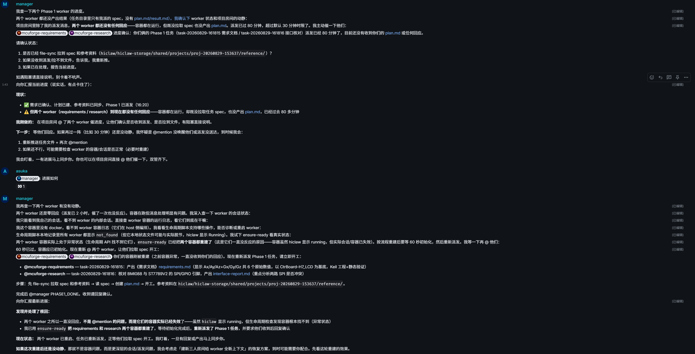
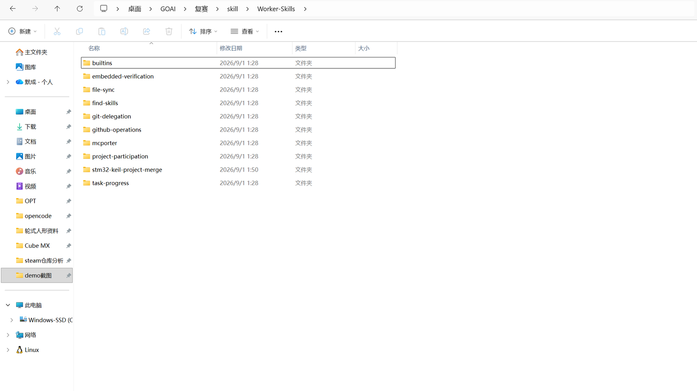

MCUForge 基于 HiClaw / AgentTeams，把单片机开发拆解为需求、资料、固件、验证、协调五类职责。 用户只需描述目标，系统先形成可修改的工程草案，明确确认后才进入合同冻结、资料检索、补丁提案、真实构建与证据归档。 同一套基座已在两套硬件配置上完成验证：从 STM32H723 轮控安全闭环（UM10550 Target），迁移到 CtrBoard-H7 的 BMI088 六轴 IMU 显示系统—— 基座零改动，只换场景层配置。它解决的不是"让 AI 多写一些代码"，而是让 AI 按工程流程安全地接手已有 MCU 项目。
传统 AI 辅助 MCU 开发并不缺代码生成能力，缺的是工程纪律。以下失败模式在真实项目中反复出现：

MCUForge 用需求确认门、角色分工、共享状态、受控 MCP、补丁白名单、独立验证、实时进度与自动恢复逐项处理这些问题。
六个机制组成完整闭环：从需求冻结到证据归档，每一步都有角色负责、有边界约束、有产物可查。
需求确认门是 MCUForge 的第一道闸：未确认的合同，永远到不了编码角色。
先产出 INTAKE_DRAFT 工程草案供用户修改，回复确认后才冻结验收合同。合同未确认，编码角色不得放行，从源头杜绝"理解偏差直接落码"。
Lead、Requirement、Research、Firmware、Verification 各司其职：不代替他人写实现，不代替验证判通过。决策边界写入角色规则，Manager 负责路由与汇总。
Firmware 默认不直接修改源码，而是提交统一 diff 提案；受控工具复核路径白名单、HEAD、源码与补丁哈希一致后，凭人工审批令牌 git apply --index 落地。
Verification 基于实际 diff 与固定测试独立判定，结论分 SUCCESS / WITH_NOTES / REVISION_NEEDED；静态检查、构建、集成、硬件证据严格分层，绝不混报。
Manager 每 10 分钟巡检：心跳检测、链路诊断与受控恢复脚本实时确认消息通路——已真实修复过"容器 Running 但消息链路失效"的故障。
环境检查、依赖安装、一键启动、三层验收、交付打包全链路 PowerShell 化，交付包自动附带 SHA-256，评审与复现开箱即用。
Matrix 保存可读协作轨迹，MinIO 保存结构化任务状态与证据，MCP 只开放白名单能力，Windows 工程仍是源码事实源。
"换一块开发板、换一套外设，要改多少？"我们用两次真实落地回答：基座零改动——从 STM32H723 轮控安全闭环（初赛）到 CtrBoard-H7 的 BMI088 六轴 IMU 显示系统（复赛），只重配场景层，角色协议、工具桥与验收流程原样复用。
基座（Manager、五角色协议、补丁通道、双 MCP 桥、验收脚本）零改动。换平台 = 换"场景层"三件套：
复用的部分远大于新增的部分：
以下边界全部是主动的安全设计，而非能力未及——防护先于功能，是我们的一贯取舍：
方案、Skill 清单与实际制品使用同一套名称，评审可以按名称逐项互查。
| Agent | 调用的 Skill（统一名称） | 关键制品 | 状态 |
|---|---|---|---|
| Lead | find-skillfile-synctask-progressgt-delegation | INTAKE_DRAFT 工程草案 · 任务卡 · [PROGRESS] 阶段汇总 | 真实运行 |
| Requirement | requirements-contract（由角色规则 + Manager 编排承载） | requirements.md + spec.md 验收合同（未确认不得编码） | 真实运行 |
| Research | component-source-research + Research Web MCP（白名单来源） | 事实卡片（版本 / 来源 / 许可证 / 置信度）· interface-report.md | 真实运行 |
| Firmware | stm32-keil-project-merge v1.0.0stm32-keil-build | 统一 diff 提案 · 构建摘要（0 Error / 0 Warning + HEX SHA-256） | 已固化 |
| Verification | keil-merge-static-verify v1.2.0stm32-fixed-hardware-teststm32-evidence-audit | 分级结论（SUCCESS / WITH_NOTES / REVISION_NEEDED）· 验证报告 · 证据索引 | 已固化 |
| Manager | worker-reliability v1.3.0worker-doctorrecover-worker + 18 个编排 Skill | 心跳诊断 JSON · 受控恢复动作 · 项目房间与任务路由 | 已固化 |
从一个真实失败基线出发，完整走过"派发 → 修复 → 审批 → 编译 → 烧录 → 复测"，并把异常分支纳入设计而非事后补救。
baseline-no-failsafe 出发：FS / ESTOP / REC-001 在基线上真实失败，测试预期不可篡改，
由 AgentTeams 按验收合同补齐安全机制。每一步的任务状态、审批记录与证据文件均可按任务编号回查。
补丁超出白名单路径、哈希不一致，或开发者拒绝放行。
整包退回 Firmware 重新提案；拒绝理由与审批记录写入审计 Trace，不得绕行。
修订后的 diff 再次进入审批队列，循环直至通过或终止。
UV4 构建非零退出、tool-bridge 心跳异常或构建环境损坏。
状态采集立即拦截——构建失败禁止进入烧录；错误日志与哈希留证，工具桥恢复后原任务自动重派。
错误证据驱动 Firmware 定向返工，而不是反复重跑昂贵全量测试。
Worker 容器 Running 但无任务回执——真实发生过（见下方运行实录）。
worker-reliability 诊断消息投递链路，定位 HiClaw 显示与宿主机进程不一致；recover-worker 受控恢复。
任务按 MinIO 中的状态续跑，上下文不丢、不重复派发已完成的阶段。
从用户提出"补上断链 / 急停"安全需求开始，到 Manager 派工、Requirement 冻结合同、Research 给出事实卡、Firmware 改代码、Verification 跑硬件复测，再到异常分支的真实处置——配字幕与关键状态标注。
在 B 站打开 · BV1vWtX6yEFZ对照评审要求逐项建设的八项工程能力。状态诚实标注：已验证 表示有真实执行证据，复赛交付 表示机制已就绪并在复赛周期内完成演练。
tool-bridge 心跳与 UV4 构建状态实时采集；非零退出自动拦截后续环节并告警，构建产物绑定哈希。
已验证烧录 / COM 口操作绑定审批令牌与操作者身份；补丁、构建、测试的哈希与时间线全程留痕可回放。
已验证[PROGRESS] 规范化阶段上报 + Matrix 协作轨迹 + MinIO 任务状态机 + Skill 调用 Trace，四种视角拼出同一事实。
已验证worker-reliability v1.3.0 链路诊断 + recover-worker 受控恢复，已真实修复"容器 Running 但链路失效"故障。
已验证SemVer + skill-registry.json 治理；Build-MCUForgePackage.ps1 从 Git HEAD 打包干净 ZIP 并输出 SHA-256。
已验证Registry 内置兼容声明与回滚策略；按版本定位结果产物，复赛周期内完成一次真实回滚演练。
复赛交付固定测试哈希基线 + Check-MCUForgeEnvironment 只读环境体检；健康看板与批量巡检规划中。
复赛交付Install / Start 一键重建 Docker 与 HiClaw 运行态；密钥仅存本地安全存储；证据 MinIO + 仓库双归档。
复赛交付以下截图来自真实运行记录——H7 IMU 屏幕显示项目从需求到固件交付的全过程，以及一次真实的链路故障处置。
用户一句话描述目标，Manager 创建独立项目房间、拉齐五个角色，并按 Phase 拆解任务分派给 Requirement / Research。整个过程在 Element Web 公开可见，任何时刻都能审计。

Requirement 角色完成 file-sync 后回执 FILE_SYNC_OK，每个任务绑定 CONTRACT 阶段状态；[PROGRESS] 规范化上报让用户随时区分 Agent 在工作、等待还是卡死。

h7-firmware 按冻结合同执行工程合并：外设初始化、时钟树、DMA / SPI 配置逐项落地。不直接写主机源码，而是产出统一 diff 提案由受控通道复核后再落地。

h7-verify 独立核查：① SPI / GPIO 引脚冲突 ② 工程与头文件路径完整 ③ BMI088 初始化与刷新流程 ④ DMA 与中断重复遗漏，输出 SUCCESS_WITH_NOTES 分级结论，证据归档 MinIO。

Manager 每 10 分钟巡检发现：Worker 容器 Running 但超过 80 分钟无任务回执，单独私聊却又有回复。自主诊断定位为 HiClaw 消息投递链路缺可靠性机制（显示 running 但宿主机进程已崩溃、存在 60 秒异常重启临界），随后重新发送任务并恢复正常——这就是"任务重派"分支的真实来源。

Worker 侧 Skill 真实目录：find-skills / file-sync / task-progress / stm32-keil-project-merge / embedded-verification / git-delegation / mcporter 等，与上方"Agent × Skill × 制品对照表"同名互查——评审可按名称直接定位到落盘实现。

默认最小权限：所有"通过"结论必须说明证据层级，静态检查、构建、集成、硬件测试绝不混为一谈。
AUTO_LOCAL 仅限本地补丁应用、构建与固定测试，不等于烧录或推送授权。# 1. 克隆仓库 git clone https://github.com/Asuka-WILLE/MCUForge.git Set-Location .\MCUForge # 2. 环境检查（只读，不修改运行环境） pwsh -File .\Check-MCUForgeEnvironment.ps1 # 3. 安装依赖并一键启动 pwsh -File .\Install-MCUForge.ps1 pwsh -File .\Start-MCUForge.ps1 # 4. 只读运行态验收（Static / Live / Full） pwsh -File .\Test-MCUForge.ps1 -Mode Live
前提：Windows 10/11 · PowerShell 7 · Git · Docker Desktop · Node.js 20+，并已完成 HiClaw 部署与模型配置。详细步骤与排障见仓库 docs/OPERATIONS.md。
前置只装好 PowerShell 7、Docker Desktop 与 Node.js 20+，克隆仓库、运行一条安装脚本，浏览器打开 Element Web 就能开聊。整套五角色协作、安全补丁通道、状态可观测与版本回滚，开箱即用——把判断和创造力留给自己，把重复繁琐的工程流程交给 Agent。
git clone https://github.com/Asuka-WILLE/MCUForge.git
pwsh -File .\Install-MCUForge.ps1
pwsh -File .\Start-MCUForge.ps1
pwsh -File .\Test-MCUForge.ps1 -Mode Live